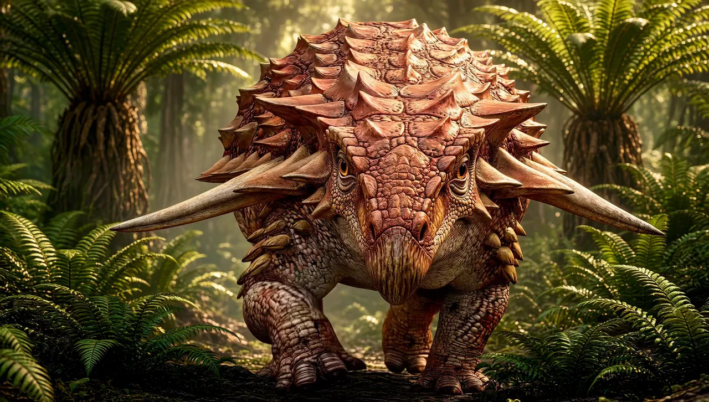

The dinosaurs we love
Borealopelta
An armored plant-eater with a fern meal still inside it.
Created by the Founder and SI. A reconstruction, not a photograph. · Fossil. Chris Woodrich, CC BY-SA 4.0, via Wikimedia Commons. File page

The model is the Smilodon page
The ones we love, and the ones you have not heard of. Each page has a free image, a map, what we know, what we do not know yet, a timeline, a role in the ecosystem, and the sources.
Background only: the Blue Marble, Earth from Apollo 17 on 7 December 1972. NASA, public domain. Not a photograph of a dinosaur.
The Smilodon page, the model · Deep Time

The dinosaurs we love
An armored plant-eater with a fern meal still inside it.
Created by the Founder and SI. A reconstruction, not a photograph. · Fossil. Chris Woodrich, CC BY-SA 4.0, via Wikimedia Commons. File page


The dinosaurs we love
A plant-eater that ended up in a tyrannosaur’s meal.
Life restoration. Anonymous Dinonerd, CC BY-SA 4.0, via Wikimedia Commons. Artist’s life restoration, not a photograph. The original file is 2687 pixels wide. This card serves 1600, not enlarged. File page · Fossil. Bazonka, CC BY-SA 3.0, via Wikimedia Commons. File page


The dinosaurs you’ve never heard of
A Morrison plant-eater with a stronger bite than its skull suggests.
Life restoration. Fred Wierum, CC BY-SA 4.0, via Wikimedia Commons. Artist’s life restoration, not a photograph. The original file is 3500 pixels wide. This card serves 1600, not enlarged. File page · Fossil. Vicpeters, CC BY 4.0, via Wikimedia Commons. File page


The dinosaurs you’ve never heard of
A plant-eater that cropped the ground, not the treetops.
Life restoration. Nobu Tamura, CC BY 3.0, via Wikimedia Commons. Artist’s life restoration, not a photograph. The original file is 753 pixels wide. This card serves 752, not enlarged. File page · Fossil. Sereno and others, 2007. CC BY 2.5, via Wikimedia Commons. A scientific figure, not a mounted skeleton. File page
This first set is four pages: the ones with a free image large enough to use, and a place that could be cited without inventing a dot.
,_Royal_Tyrrell_Museum,_Drumheller,_Alberta,_2025-07-13.jpg){kind=link}